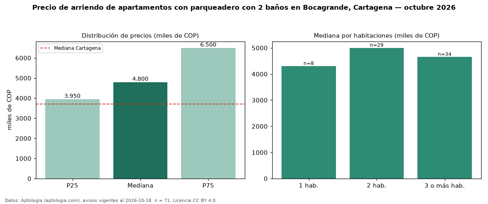

Precio de arriendo de apartamentos con parqueadero con 2 baños en Bocagrande, Cartagena — octubre 2026
En Bocagrande, Cartagena, la mediana de canon mensual de apartamentos con parqueadero con 2 baños es COP 4,80 millones, según 71 avisos vigentes. Frente a la mediana de los apartamentos con parqueadero en arriendo de Bocagrande (COP 5,00 millones, n = 145), queda 4 % por debajo; este segmento reúne el 49 % de esos avisos. Por metro cuadrado, la mediana es COP 44.944/m² al mes (n = 71), 8 % por debajo de los apartamentos con parqueadero en arriendo de Bocagrande (COP 48.673/m²). El área mediana anunciada es 100 m². El segmento con más oferta es el de 3 o más habitaciones (34 avisos, mediana COP 4,65 millones); pasar de 1 habitación a 3 o más habitaciones cambia la mediana +8 %. La administración mediana declarada es COP 980.000 al mes (n = 31), aparte del canon. El estrato más frecuente es 6 (75 % de los avisos con estrato). La mediana de todos los apartamentos en arriendo de Cartagena es COP 3,70 millones (+30 % de diferencia). Datos: Aptología (aptologia.com), CC BY 4.0 — https://www.aptologia.com/arriendo/cartagena/bocagrande. Archivos: PDF, CSV con las cifras y gráfica PNG.

| Avisos únicos | 71 |
|---|---|
| Percentil 25 | COP 3.950.000 |
| Mediana | COP 4.800.000 |
| Percentil 75 | COP 6.500.000 |
| Mediana por m² | COP 44.943 |
Fuente: avisos vigentes de portales inmobiliarios recopilados por Aptología, deduplicados (mínimo 30 avisos únicos por celda). Precios pedidos, no cerrados. Fecha: 2026-10-18.